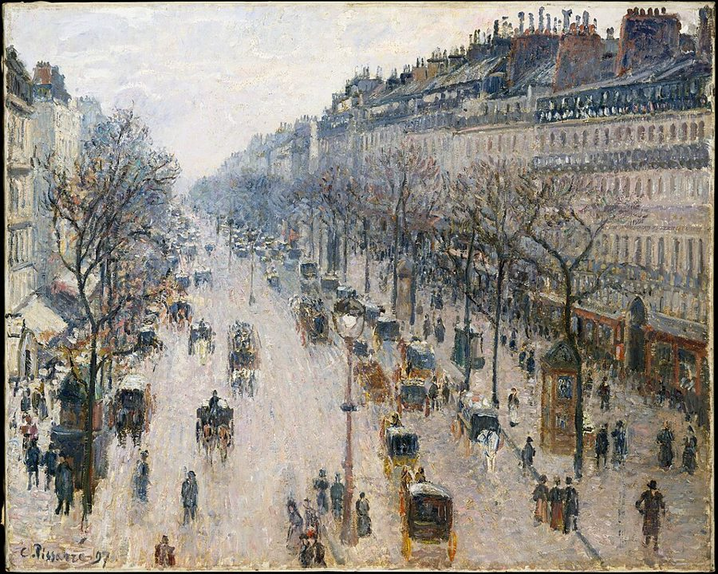
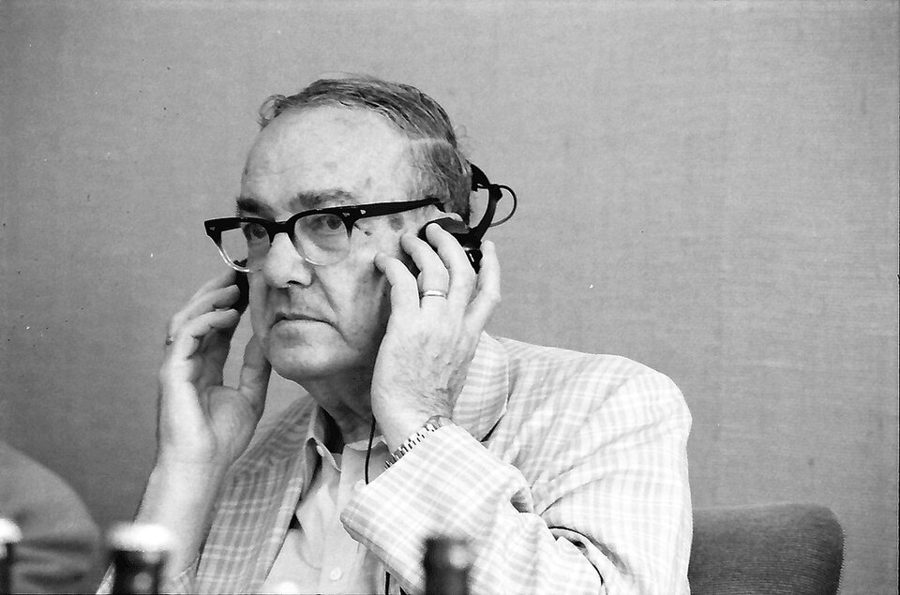
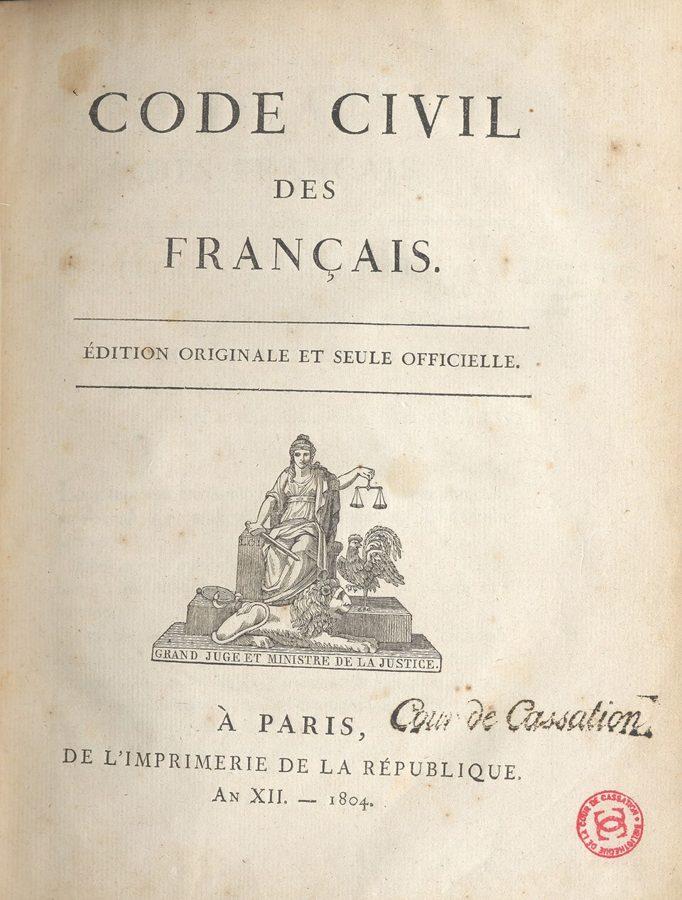
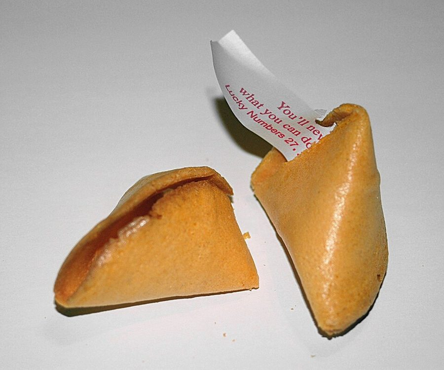

be not made for
… but we are not made for mathematics …
我们人天生就不是为数学造的
和 §3 的「出厂规格」是同一个比喻：人这台机器设计时，没打算让它算概率。
这一章是全书讲心理学最集中的一章。作者在 2004 年的序里说它是全书最不原创的一章：他把概率偏误的研究压缩进来，配上交易室里的注解。前半从一个度假的小难题讲起，接着揭开第 1 章埋下的 Nero 的秘密，再用盖章的官员、老虎、拿破仑法典讲人脑靠什么做决定，带出 Simon 和 Kahneman、Tversky 两派研究。读的时候抓一条线：算得出一个概率，和心里感受到它，是两回事。

第 1 章说 Nero 有个秘密，留到后面再讲；第 3 章讲了看盘越勤越痛苦的牙医，第 8 章讲了住在曼哈顿、总和邻居比的 Marc 和 Janet。到这一章，作者把这些故事背后的心理学一次讲出来。第 11 章是第二部的最后一章，下一章就进第三部。这一页是这一章的前半，讲人为什么「概率盲」、靠什么捷径做决定；后半（11b）换成进化心理学，再到各行各业的一串错题。
§5 作者说两百年来对经济学影响最大的是两位心理学家，又说经济学「主要是规范科学」。这是他的立场和修辞，经济学界自己并不这样看，行为经济学后来也进了主流。读的时候把它当作者的口气，详细的在页末。
人为什么算得出一个概率，心里却感受不到它？
读的时候带着这几个问题。不用先找答案，读完回来对照「检查一下理解」。
开头两节是一对：§1 是一个谁都能自己试的思想实验，§2 立刻换成 Nero 的故事，第 1 章留下的秘密在这里揭开。§3 起语气变了，像一堂心理学导论：先用官员和老虎讲规则的好处，再讲 Simon（§4），再讲 Kahneman 和 Tversky（§5）。§5 中间作者离题去骂经济学家，读到「规范科学」时会觉得突然跳了一下。§6 又是一个比喻，俄罗斯的法律和拿破仑，把「规则」的话题收住。§7 回到作者的本行：交易员给偏误起的外号，一路讲到锚定，顺手把第 1、3、8 章的人物都叫回来。§8 是一段健身房里的真事，后半变成一张清单。§9 很短，像教科书的一页，交棒给 11b。
这一页是原书和译本第 11 章的前半，一共 9 节。粗体是本站给的节名，后面是档和译本字数；下面是译本的小标题和这一节在译本电子书里开头的几个字（搜它就能跳过去），再下面是英文原文的开头。「先读」是这一章的骨架，「有空」好看、跳过不丢线，「可跳过」读不读都行。读完打个勾。
先把这一页用到、作者默认你懂的几个概念讲一遍。讲的是概念本身，作者拿它推出什么，读原书时自己看。别页讲过的概念，点链接过去看。
经济学的标准模型假定人会把所有选项比一遍，挑出最好的那个，这叫最优化。Simon 指出现实里做不到：选项太多，信息要花钱打听，时间有限。人实际的做法是先定一个「够好」的标准，碰到第一个达标的就停。这叫满意即止，是 satisfy（满意）和 suffice（足够）拼成的词；这样运作的理性叫有限理性。
程序员很熟悉这种做法：搜索算法设一个超时，时间到了就交出手上最好的解；租房看到第五套还行就签了，没把全城的房子看完。这不是偷懒，是把「找」本身的成本也算了进去。
在这一页：§4 作者用它介绍 Simon，§5 拿另一派和它对比：人的捷径是近似的最优，还是另一回事。
启发法是脑子做判断时走的捷径：不去算概率，而是看例子好不好想起来（可得性），像不像典型的样子（代表性），心里是什么感觉（情感启发）。捷径大多时候够用，但在某些题上会朝同一个方向错，错得可以预测，这些错就叫偏误。
Kahneman 和 Tversky 从 1970 年代起用一个个小实验把它们找出来，这一派研究就叫「启发法与偏误」。最有名的是琳达问题：描述一位像社运人士的女士，问她「是银行柜员」和「是银行柜员而且是女权主义者」哪个更可能。很多人选后者，可是两件事同时成立的概率，不可能比其中一件成立还大。
在这一页：§5 讲这一派的来历，§7、§8 列出锚定、小样本、可得性、代表性几种。事后诸葛见后见之明偏差。
实证的研究问「世界实际是怎样」：人实际上怎么花钱、怎么下注。规范的研究问「应该怎样」：一个完全理性的人该怎么选。两样都有用，但不能混：地图画的是路实际怎么走，导航告诉你该怎么走。
经济学的很多模型从「人是理性的」出发。这个假设可以当成对人的描述（实证），也可以当成计算最优做法的标准（规范）。行为经济学的批评是：拿它当描述，常常和实验里看到的人对不上。这里的「实证」说的是描述事实，和哲学上的实证主义（positivism）不是一回事。
在这一页：§5 作者借这一对概念批评主流经济学，说它主要是哪一种，读的时候自己判断。
人对一笔钱的感受，取决于它和某个参照点相比是多了还是少了，不太取决于总数。同样账上有 100 万，从 50 万涨上来的人高兴，从 200 万跌下来的人难受。参照点常常是最近看到的数：昨天的收盘价、去年的年终奖、同事的工资。
Kahneman 和 Tversky 1979 年的前景理论把这画成一条曲线：横轴是相对参照点的得失，纵轴是感受，亏的那一边比赚的那一边陡，亏一千元的难受大过赚一千元的高兴。锚定和它相通，出在估计数字的时候：先看到一个数，哪怕明知是随便抽的，估计也会被它拉过去。
在这一页：§7 作者说这是最要紧的一种偏误，并回头提第 3 章的牙医、第 8 章的 Marc 和 Janet、第 1 章的 John。
心理学家把思考粗分成两类。系统一快、自动、不费力，你察觉不到它在工作：认出一张脸，听出对方生气了，看到 2+2 就想到 4。系统二慢、费力、一步一步来：算 17×24，核对一份合同，查一个难缠的 bug。系统一常常先给出答案，系统二懒，多半照单全收。
这对名字是心理学家 Stanovich 和 West 2000 年起的，Kahneman 2011 年的《思考，快与慢》让它出了名。它们不是大脑里的两个部位，是两类过程的简称，Stanovich 等人后来改称「类型一 / 类型二」。练习能把系统二的本事变成系统一的：初学开车每个动作都要想，开熟了能边开边聊天。
在这一页：§9 列出两套系统各自的特点，再用下棋讲练习的作用；§8 健身房的故事是它的铺垫。
按在书里出现的顺序排，标题前是节号。只讲到读懂这一页需要的程度。
奥赛博物馆在巴黎塞纳河左岸，由一座旧火车站改建，收藏 19 世纪后半的法国艺术，印象派最多。毕沙罗（Camille Pissarro，1830–1903）是印象派的元老，画过很多巴黎街景和灰蒙蒙的冬天，原书把他的名字拼成了 Pissaro。海滩上那两位「最喜欢的作家」是作者的玩笑：Tom Clancy 是写军事惊悚小说的美国畅销作家，Ammianus Marcellinus 是 4 世纪的罗马史家，一个通俗、一个冷僻，放在一摞里。
Paul Krugman（1953–）是美国经济学家，2008 年诺贝尔经济学奖得主，写过流行的国际经济学教科书，也长年给《纽约时报》写专栏。作者拿他开一个小玩笑：把这本书交给那位只管盖章的官员，书不是被拿到黑市卖掉，就是转手送了侄子。这一节的「社会主义国家」没有点名，§6 的俄罗斯是另一个例子。

作者说他「整个职业生涯」都在匹兹堡的卡内基梅隆大学，不太准：他 1949 年才去那里（当时叫卡内基理工学院），之前在芝加哥的伊利诺伊理工学院教政治学，此后一直待到去世。作者照它的全称写成 Bank of Sweden Prize，这是这个奖的正式名字：它由瑞典央行 1968 年设立，不在诺贝尔的遗嘱里，第 6 章讲卢卡斯时也提过。
原书说两人「起初」是以色列人，指的是他们后来都去了美国。§5 开头被拿来对比的是几位大经济学家：Keynes、Alfred Marshall、Paul Samuelson、Milton Friedman。作者承认看透了不确定性的少数人是 Keynes、Frank Knight 和 G. L. S. Shackle：Knight 1921 年的书把可以算概率的「风险」和算不出概率的「不确定性」分开，至今常被引用。
作者把经济学分成两边。一边是商学院和经济系教的新古典经济学：假定人是理性的「经济人」（Homo economicus），由此推出有效市场（价格已经反映了所有公开信息，没人能靠分析长期跑赢市场）和理性预期（人对未来的估计平均来说没有系统性的错）。另一边是 Kahneman 和 Tversky 之后兴起的行为经济学和行为金融，研究人实际上怎样偏离这些假设。这本书初版的 2001 年，金融学里前一边还占上风。

1991 年底苏联解体，之后十年俄罗斯的法律变动很快。书里说，去那里做生意的西方人发现法律彼此矛盾，有时守了这一条就得犯那一条。拿破仑 1804 年颁布的民法典，把法国大革命前各地互不相同的法律统一成一部从上往下设计的法典，后来影响了欧洲大陆和拉丁美洲许多国家的民法。作者拿它比喻一个有「中央系统」的大脑，再说人脑没有这样的东西。
书里说受试者自己抽了一个 0 到 100 的随机数。Tversky 和 Kahneman 1974 年在《科学》杂志发表的原实验用的是一个转盘，做过手脚，只会停在 10 或 65。转到 10 的那组，估计联合国里非洲国家占多大比例，中位数是 25%；转到 65 的那组是 45%。答得准有奖金，也没让这个效应变小。§7 后面回头提了三组人：第 3 章看盘的牙医，第 8 章的 Marc 和 Janet，第 1 章的 John。书里这里说 John 有过 1000 万，第 5 章说超过 1600 万，原书前后不一。

幸运饼干是美国中餐馆饭后送的小脆饼，里面夹一张纸条。问人「学位是从幸运饼干里抽出来的吗」，是说他的学位不值钱。作者冒充波兰城市罗兹（Lodz）一所学院的「Talebski 博士」，把 r 拖长，学东欧口音。§8 那项对数理心理学家的调查，是 Tversky 和 Kahneman 1971 年的论文《相信小数定律》做的；琳达问题出自两人 1983 年的论文。
读英文原文时值得停一下的词和句：交易员的行话、作者的反话和双关、熟词生义。灰色斜体是原句里连续的几个词，在英文电子书里搜它就能找到；标「每个字都认识」的，是每个词都眼熟、合起来意思却变了的，最容易读错。点「记下」收进词本。
对着译本读这一页时，下面这些地方会把人读歪。方框里是译本的原句，在译本电子书里搜它就能找到；灰色斜体是英文原文那一处。只收意思错了、反了、漏了的，措辞上的出入和台湾用语不收。全书的勘误汇总在译本勘误。
… Likewise with statistical significance. Even specialists …
译本：「兩者的統計顯著性一樣」
原文接着汉堡的例子说：统计显著性也是这样被人看的，要么显著、要么不显著，中间的程度被抹掉，所以连专家也太快接受或否定一个结论。译文读来像在说两种汉堡说法的显著性相同，这句的意思没了。
… should give credibility to the Nobel academy …
译本：「這應該歸功於諾貝爾學院」
原文是说：把奖颁给真正做实验的科学家，替评奖的人挣了信誉，在把 Kahneman 看得比那群瑞典评委重得多的人眼里尤其如此。是 Kahneman 给奖添了分量，不是功劳归评委。后半句的 like many 是「像许多人一样」。
… that they existed in the heuristics literature …
译本：「根據試探法方面的文獻，他們表現出」
原文说：交易员自己起的那些土名字，在文献里早就有学名（锚定、情感启发、后见之明），发现这一点让交易员既得意又失望。译文读来像是文献说交易员「表现出」这些偏误，把「早有名字」读成了「犯了毛病」。
… There is the well-known trader maxim …
译本：「生活是緩步漸進的」
格言 life is incremental 的意思是：人过日子只感受到一笔笔的变化。这正是本节「只看变化、不看总量」的道理。「緩步漸進」读来像劝人慢慢来、一步一步走，和这一段对不上。
… he was happier when he only had …
译本：「如果他是從零起步，即使只有五十萬美元」
原文说的是已经发生的事：John 从零往上爬、手里只有 50 万的时候，比后来跌到剩 100 万时快乐。译文改成了假设，作者拿来反驳经济学家的证据就成了推测。
… one in physics (statistical no less) …
译本：「統計知識並沒有因此比較少」
no less 在这里是「偏偏还是」：他的物理博士是统计物理。正因为他是统计行家，后面凭一次观察下结论才可笑。译文读成统计知识「没有比较少」，这层讽刺没了。
… earthquake in California deemed more likely …
译本：「加州發生地震的可能性，高於整個國家發生天災」
deemed 是「被人认为」。原文说的是人的错觉：觉得加州地震比全国发生灾难更可能，觉得死于恐怖袭击比死于一切原因更可能。漏了这个词，读来像在陈述事实，可这两件事在逻辑上都不可能。同一句的恐怖袭击也一样。
… deemed more likely to be a feminist …
译本：「比較有可能成為主張女權主義的銀行櫃員」
原文：这样一个学生「被认为」更可能是女权主义的银行柜员，而不只是银行柜员。这是人们犯的错：「是 A 又是 B」不可能比「是 A」更可能。译文漏了「被认为」，把错误的判断写成了结论，读者会被带反。
… neutral, abstract, sets, asocial, and depersonalized …
译本：「集群，反社會」
asocial 说的是系统二处理抽象的规则和集合，不管涉及谁、和谁有关，正好和系统一的 social、personalized 相对。「反社會」读来像敌视他人，意思错了。
… found a confirmation of that as researchers …
译本：「我在研究試探法和偏誤的傳統時，證實了這件事」
原文是：作者一直相信期权交易员靠练习练出了概率直觉；启发法与偏误这一派的研究者相信系统一能被经验改造，他在这里找到了印证。译文变成作者亲自做研究证实了这件事，相信的人也从研究者换成了作者，证据的来路就弄错了。
读完这一页的几节再看。下面是作者在这几节里的主张，由本站按主张之间的逻辑重新组织，不按原书的顺序；每条后面是节号，拿不准就回书里那一节再读一遍。
他用度假和赌一千元的例子说：理性的做法是按概率给几种结局加权，可人脑一次只装得下一个画面。他拿 Nero 说明：Nero 35 岁时被诊断出癌症，查到五年存活率 72%。他心里从来不是「七成活着」，想到死就是自己的葬礼，想到活就是病好了去阿尔卑斯滑雪。
§1 §2他说人不是一台优化机器：盖章的官员、见了老虎就跑的人，靠的都是规则而不是思考，这省时间，甚至救命。可这些规则是一条条补上去的，没有拿破仑那样的总设计，同一件事翻到不同的「章节」就有不同的反应，偏好甚至能绕成一个圈。
§3 §6他转述两派：Simon 说人「有限理性」，近似到够好就停；Kahneman 和 Tversky 说启发法是另一类推理，带着系统性的偏误，有激励也不消失。他站在后一派，并借此说主流经济学主要是规范科学，拿「人是理性的」当前提，不看人实际怎么做。
§4 §5他说这是后果最大的扭曲：心里的计数器隔一阵就归零，人只对离参照点的变化有感觉，亏比赚更疼。所以先赚 100 万再亏 30 万，不如一次赚 70 万；推到极限，过了温饱线，财富本身不让人快乐，让人快乐的是财富的增加。他拿牙医和 John 作例子，说这和经济学的假设正面冲突。
§7他拿健身房里那位统计物理博士说明：同一个人，答统计题时不会凭一次观察下结论，聊市场时就会，因为用的是另一套脑子。他转述系统一、系统二的分法，并说他一直相信期权交易员靠天天练，把概率练进了直觉。
§8 §9合起来：人脑生来不擅长概率：它一次只装得下一个画面，靠一堆未必彼此一致的捷径做决定，只认离上一个参照点的变化。连统计学家也躲不开；作者相信，长年天天做期权的人练出来的直觉会好一些。
Our brain can properly handle one and only one state at once— §1。本站译：我们的脑子一次只能好好处理一种状态，有且只有一种。
这是全章的命题，口气是下判断，不带 I believe。关键是 one and only one，作者用数学里「有且只有」的说法，故意说得很绝；后面紧跟一句玩笑，说除非你有严重的人格分裂。它说的是想象，不是计算：你当然算得出各五成的平均，只是「看」不见它。别把它读成「人不会算概率」。
Normative economics is like religion without the aesthetics.— §5。本站译：规范经济学就像一门没有美感的宗教。
典型的 Taleb 式骂人：短，带刺，一句话把两个他不喜欢的东西捆在一起。宗教至少还有教堂和圣歌，规范经济学只剩教条。译本：「規範經濟學就像缺乏美學的宗教」意思到了。这是修辞，不是论证；页末「本站怎么看」讨论它撑不撑得住。
这本书 2004 年出第二版，书里讲的多是 1980–2003 年的事。下面挑出这一页里能被后来的研究或事情检验的说法，分「书里 / 当时 / 今天」几栏，并给一个结论。结论判的是标题里「书里的说法：」后面那一句。全书的这一节汇总在今天怎么看。
读完作者的主张，再看它站不站得住。每一块摆出三样：主流怎么看，作者怎么看，本站的评论。最后一句是本站对这一页的总体判断。
主流看法：前景理论（Kahneman 和 Tversky 1979）发现，人并不按真实的概率加权：很小的概率被看得太重，很大的概率被看得太轻，但也不是全有全无。换个说法感受就变，也有大量实验：Levin 和 Gaeth 1988 年让人评价同一份碎牛肉，标「75% 瘦肉」的比标「25% 肥肉」得分高。
作者的看法：人脑一次只能想象一种状态，想象不出按概率加权的混合；72% 活和 28% 死在 Nero 心里是两幅完全不同的画面。§1 §2
本站的评论：「只装得下一种」是夸张，但抓住了要害：期望值只能算，没法「看见」。汉堡那个例子背后有扎实的实验。可以自用的办法 11b 会讲：把概率换成「一百个人里有几个」，脑子就容易装下了。Nero 的故事好就好在，它让读者先感受到这个毛病，再听道理。
主流看法：偏误在实验室里很稳。Camerer 和 Hogarth 1999 年综述了 74 项实验，发现加钱常常只让人更用心，没有哪项被复制过的研究单靠提高报酬让偏误消失。以 Gigerenzer 为代表的另一派则认为，启发法在它适应的真实环境里又快又准（「生态理性」），很多实验题的写法本身就诱人出错。两派争的多半是怎么解读，不是实验结果。
作者的看法：他站在 Kahneman 和 Tversky 一边，说启发法是另一类推理，有激励也不消失；但他在 §3 也说规则省时省力，见了老虎就跑的人活了下来。§3 §5
本站的评论：这两句并不矛盾，只是尺子不同：拿概率论当尺子，捷径是缺陷；拿老虎当尺子，捷径救命。真正要问的是你此刻面对的是哪一种环境。作者的整本书就在说：市场不是老虎，在这里凭本能跑会出错。11b 会讲另一派怎样替捷径辩护。
主流看法：实证和规范之分在经济学里很早就有，John Neville Keynes 1891 年就分过；Friedman 1953 年的名文〈实证经济学的方法论〉主张经济学是实证科学，理论好坏看预测准不准。行为经济学后来进了主流：Kahneman 2002 年、Shiller 2013 年、Thaler 2017 年都获了诺贝尔经济学奖。
作者的看法：两百年来对经济思想影响最大的是两位心理学家；除了少数几人，经济学家连自己不懂不确定性都没弄清楚；经济学主要是规范科学。§5
本站的评论：这是修辞，不是可以检验的判断。他点名「当然不是」的 Friedman，恰恰写过最有名的「经济学要当实证科学」宣言；作者说经济学（他特别点了微观经济学和金融经济学）「主要」是规范科学，至少对经济学家自认的方法不公平。但矛头有所指：成书时金融学的主流假定人是理性的、市场是有效的，行为金融还在边上。二十年后，这一边已经大得多。
本站的总体看法：这一页最值得带走两件事：算得出的概率不等于感受得到的概率，人只对离参照点的变化有感觉，后者有前景理论和大量实验撑着。对启发法和偏误的介绍大体准确，是一份好读的入门。要打折扣的是对经济学家的一竿子打翻，和「财富本身不让人快乐」这种推到极限的说法。
先在心里答，再点开。答错的那题，回书里把对应那一节再读一遍。
期望是 0.5×0 + 0.5×2000 = 1000 元。但脑子里只会浮现一幅画面：要么一无所有的害怕，要么多赚一千的兴奋，哪一幅占上风，你就照它去赌。
没有不同，是同一件事的两种说法。可在 Nero 心里，一个变成自己的葬礼，一个变成病好了去滑雪。作者由此说人不是为数学造的，接着举了汉堡肉「75% 无脂」和「25% 有脂」的例子。
不矛盾。§3 说的是规则省时省力，见了老虎先跑的人活了下来；§5 说的是拿概率论来量，这些捷径会朝固定的方向出错，给钱也改不掉。同一套捷径，在一种环境里救命，在另一种环境里坏事。
一次赚 70 万比先赚后亏好受：人会很快习惯 100 万，那 30 万就成了一次实打实的亏损。分两次各 35 万更好，因为心里记的是两次「增加」。
演示锚定：两人的回答都被作者先说的数拉了过去。作者自己叫它「凭个例的实证」，是陪衬，不是证据；证据是他前面转述的那个随机数实验。
一是推断时没用他的统计头脑，用的是另一个；二是看重小样本，只凭作者一次随口的回答就评判他的预测能力，作者说这是最糟的推断错误。换成统计题问他，他马上就会笑出题的人。
用一句话说这一页：
想一想：你心里有没有一个会自己归零的「计数器」？比如拿到年终奖时，你在意的是总数，还是和去年比、和同事比多了还是少了？如果把参照点换一个，你对同一笔钱的感受会变吗？
读过又忘了，从这里想起来。挑的是这一页最值得记住的故事和说法，不按原书顺序；每条后面是节号，想细看就回书里那一节。全书各页的这一节都收在全书回顾。
一句话：算得出一个概率，不等于感受得到它：人脑一次只装得下一种结局，只认离参照点的变化。
去巴黎和去海滩各五成，理性的想法是两边各占一半。作者问：你能想象一半在加勒比海泡脚、一半在巴黎淋雨的样子吗？
§1Nero 35 岁被诊断出癌症，读到五年存活率 72%。他从没觉得自己「七成活着、三成死了」：想到死是葬礼，想到活是去阿尔卑斯滑雪。
§2看见老虎先研究它属于哪个品种的人被吃了；拔腿就跑的人活了下来，有时只是因为跑得比表亲快。
§3账上是净赚 70 万，心里却记着一次亏损。一次拿到 70 万，或者分两次各拿 35 万，感受要好得多。
§7作者先报 40 分钟，饭店的人说约 35；再问是不是 20 分钟，前台说约 25。实际开了 31 分钟。
§7一位统计物理博士凭作者一次随口的猜测就怀疑他的信誉；要是把同一件事包装成统计题，他会反问出题人：你的学位是从幸运饼干里抽的吗？
§8